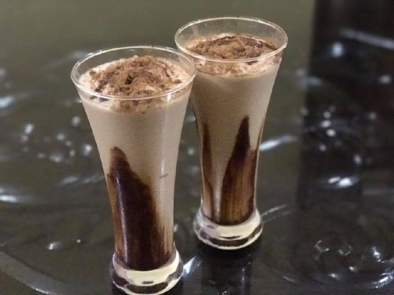

Ice Cream Cold Coffee
Creamy, chilled, and absolutely refreshing — this Ice Cream Cold Coffee is perfect for hot days or as a dessert drink. Made with strong coffee, milk, ice cream, and a touch of chocolate syrup, it’s both energizing and indulgent.
Ingredients
- 1 cup strong brewed coffee (cooled)
- 1 cup cold milk
- 2 scoops vanilla ice cream
- 2 tbsp sugar (adjust to taste)
- Chocolate syrup or cocoa powder for garnish
- Ice cubes (optional)
Instructions
- Brew & cool coffee: Prepare strong coffee and let it cool to room temperature.
- Blend: In a blender, combine cooled coffee, milk, sugar, and 1 scoop of ice cream. Blend until frothy.
- Serve: Pour into tall glasses. Add ice cubes if desired, and top with the remaining scoop of ice cream.
- Garnish: Drizzle with chocolate syrup or sprinkle cocoa powder on top.
- Enjoy: Serve immediately and sip your delicious, creamy cold coffee!
Tip: For a chocolate version, add 1 tbsp chocolate syrup while blending. You can also use coffee ice cream for an extra coffee kick!